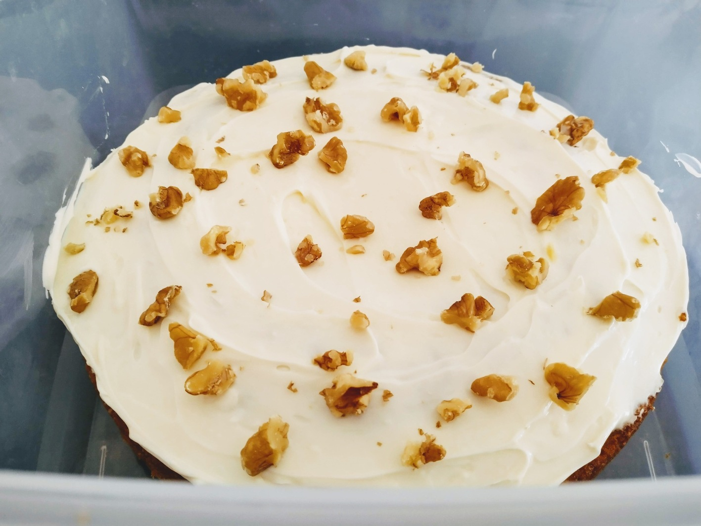

Carrot Cake

Preheat oven to 170 degrees. Grease springform round cake tin
1 cupwalnuts finely chopped
Lightly toast walnuts in oven for 5 mins
2 cupplain four2 tspbaking powder- salt
1 tspcinnamon1 tspnutmeg1 tspginger
Place flour baking powder, salt and spices in bowl and combine.
1 1/4cups olive oil1/2caster sugar1/2cup brown sugar2 tspvanilla extract4eggs
Whisk together in a separate bowl oil, sugars, vanilla and eggs.
125gcream cheese, softened
> Mix in wet ingredients and cream cheese
3carrots finely grated
Fold in carrot and walnuts.
Transfer batter to cake tin and bake for 30 mins.
1 cupicing sugar, sifted1/2 tspvanilla extract
To make icing, beat cream cheese, icing sugar and vanilla extract together.
Transfer icing to cake, top with walnuts.